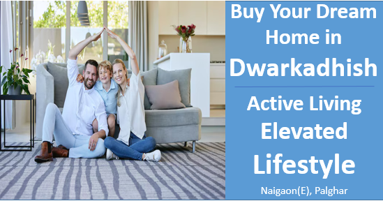

अपने सपनों का घर खरीदें द्वारकाधीश में: सक्रिय जीवन, ऊँचा जीवनस्तर।
पिछले कुछ वर्षों में, लोग अब ऐसे घरों को प्राथमिकता दे रहे हैं जो उनकी सक्रिय, स्वस्थ और जुड़ी हुई जीवनशैली को सपोर्ट करते हैं। इस बदलाव ने डेवलपर्स को ऐसे प्रोजेक्ट बनाने के लिए प्रेरित किया है जो इन नई जरूरतों को पूरा कर सकें। द्वारकाधीश इस बदलाव का एक बेहतरीन उदाहरण है, जहां एक ऐसा टाउनशिप तैयार किया गया है जो सक्रिय जीवन और पर्यावरण के प्रति जिम्मेदारी को महत्व देता है। यहां आधुनिक सुविधाएं और हरियाली से घिरी जगहों का ध्यान रखा गया है, ताकि लोग एक खुशहाल और सेहतमंद जीवन जी सकें।
जीवन के भविष्य को आकार देना: स्वास्थ्य, कनेक्टिविटी और स्थिरता को अपनाना।
जीवनशैली-केन्द्रित आवासीय जीवन शहरी विकास में एक महत्वपूर्ण तत्व बनकर उभरा है, क्योंकि समग्र और संतुलित जीवन अनुभव की मांग लगातार बढ़ रही है। इसके जवाब में, डेवलपर्स अपने प्रोजेक्ट्स में नई और बेहतर सुविधाओं को शामिल कर रहे हैं ताकि इन बदलती हुई अपेक्षाओं को पूरा किया जा सके। इस बदलाव को आकार देने वाली प्रमुख प्रवृत्तियों में शामिल हैं:
- जुड़ी हुई सामाजिक स्थान
- स्वास्थ्य और तंदुरुस्ती सुविधाएं
- पर्यावरणीय रूप से स्थायी डिज़ाइन
प्रकृति और देखभाल का संगम: स्वस्थ और खुशहाल जीवन के लिए हरे-भरे स्थान
हरे-भरे स्थान, जैसे पास में स्थित प्राकृतिक जगहें जैसे बांध, अब आधुनिक आवासीय प्रोजेक्ट्स में महत्वपूर्ण बन गए हैं, जो शारीरिक और मानसिक स्वास्थ्य को बेहतर बनाते हैं। पार्क, बगिचे और हरे-भरे क्षेत्र, साथ ही पास के बांध का शांत वातावरण, विश्राम, बाहरी गतिविधियों और सामाजिक संपर्क के लिए अवसर प्रदान करते हैं। ये स्थान वायु गुणवत्ता को सुधारते हैं, तनाव को कम करते हैं और शहरी जीवन से शांति का अनुभव देते हैं। अब ये केवल लग्जरी नहीं, बल्कि स्वस्थ और टिकाऊ समुदायों के निर्माण के लिए जरूरी बन गए हैं, जो निवासियों की जीवन गुणवत्ता को ऊँचा उठाते हैं।
- बेहतर वायु गुणवत्ता: स्वस्थ जीवन के लिए ताजगी से भरी, साफ हवा
- कम तनाव: हर पल में शांति और संतुलन पाना
- बेहतर सामाजिक संपर्क: मजबूत रिश्ते और सामुदायिक भावना को बढ़ावा देना
- बेहतर दृश्य आकर्षण: हर कोने में सुंदरता का अहसास
सक्रिय रहो, स्वस्थ रहो: शारीरिक और मानसिक तंदुरुस्ती की ताकत को अपनाना
द्वारकाधीश एक ऐसा प्रोजेक्ट है जो सक्रिय जीवनशैली की पूरी भावना को अपनाता है, जिसमें निवासियों के स्वास्थ्य और भलाई पर विशेष ध्यान दिया गया है। इस विकास में ऐसी कई सुविधाएं शामिल हैं जो नियमित शारीरिक गतिविधि और सामाजिक जुड़ाव को बढ़ावा देती हैं। इनमें जॉगिंग ट्रैक, योग और ध्यान के स्थान, बगिचे और पार्क, साथ ही वरिष्ठ नागरिकों के लिए विशेष क्षेत्र भी शामिल हैं, जो एक सक्रिय और संतुलित जीवनशैली को सपोर्ट करने वाले वातावरण का निर्माण करते हैं। इसका परिणाम यह है कि निवासी शारीरिक फिटनेस में सुधार, मानसिक भलाई में वृद्धि, तनाव कम करने और मजबूत सामाजिक संबंधों का लाभ उठा सकते हैं, जिससे एक समृद्ध और जीवंत समुदाय का निर्माण होता है।
- बेहतर हृदय स्वास्थ्य
- तनाव से राहत और भावनात्मक संतुलन
- तेज़ मानसिक ध्यान
- मजबूत सामाजिक जुड़ाव
निष्कर्ष
निष्कर्षस्वरूप, सक्रिय जीवनशैली की ओर बढ़ता हुआ रुझान आवासीय रियल एस्टेट के भविष्य को आकार दे रहा है, क्योंकि डेवलपर्स अब समग्र और तंदुरुस्ती-केंद्रित समुदायों की बढ़ती मांग को समझ रहे हैं। जीवनशैली-केन्द्रित सुविधाओं को प्राथमिकता देते हुए और नवाचारी सुविधाओं को शामिल करते हुए, वे ऐसे स्थान बना रहे हैं जो शारीरिक और मानसिक भलाई दोनों को बढ़ावा देते हैं। जैसे-जैसे यह प्रवृत्ति विकसित होती जा रही है, सक्रिय जीवनशैली स्वस्थ, जुड़ी हुई और समृद्ध समुदायों के निर्माण में अहम भूमिका निभाएगी, जिससे निवासियों की समग्र जीवन गुणवत्ता में सुधार होगा। जो डेवलपर्स इस बदलाव को अपनाएंगे, वे न केवल आज के घर खरीदारों की ज़रूरतों को पूरा करेंगे, बल्कि भविष्य के समुदायों को भी आकार देंगे।
Contact us
+91 72088 43484 / +91 72088 43487
kkcreateandbiuld@gmail.com
Radha Nilaya, Plot No. 164/2,
Bapane Village, Chandrapada Road,
Naigaon (E) - 401208,
Maharashtra, India.